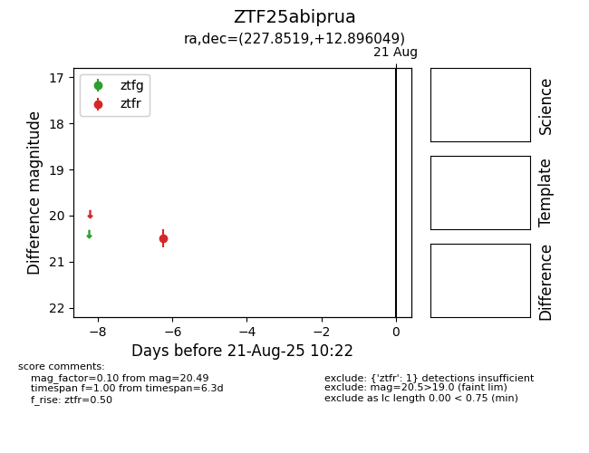

Target ZTF25abiprua at 2025-08-21 10:22, see:
FINK: fink-portal.org/ZTF25abiprua
Lasair: lasair-ztf.lsst.ac.uk/objects/ZTF25abiprua
ALeRCE: alerce.online/object/ZTF25abiprua
alt names
ZTF25abiprua (ztf,alerce)
coordinates:
equatorial (ra, dec) = (227.8519,+12.89605)
galactic (l, b) = (16.4396,+54.33900)
photometry
last ztfr=20.49
1 ztfr detections
